Anhang
Fahrpedalsensor
Hersteller: BMW, Teilenummer: 6770935
Das Pedalmodul verfügt über zwei unabhängig voneinander arbeitende Sensoren zur Redundanz- und Plausibilitätskontrolle. Sensor 2 gibt genau die Hälfte der Spannung von Sensor 1 aus.


Wasserpumpe Inverter
TOPSFLO Das Anschlusskabel der bürstenlosen Wasserpumpe ist ein hochtemperaturbeständiger Teflondraht, der von guter Qualität ist. Sein Anschlusskabel ist 4P und seine Antriebsplatte verfügt über einen Verpolungsschutz.Daher sind die Plus- und Minuspole mit der Wasserpumpe verbunden, funktionieren aber nicht und verbrennen die Antriebsplatte nicht.Die Antriebsplatte verfügt außerdem über eine Ausgangssignal-FG-Leitung (gelbe Linie) und eine blaue Geschwindigkeitsregulierungsleitung (5V PWM-Signal). Die Verkabelungsmethode ist wie folgt:
- Rote Leitung: An den Pluspol der Stromversorgung anschließen (12 V)
- Schwarze Leitung: Verbinden Sie den Minuspol der Stromversorgung und den Minuspol des PWM-Signals (GND).
- Gelbe Linie: FG-Leitung des Ausgangssignals (Lassen Sie es einfach in der Luft)
- Blaue Linie: 5V PWM-Signal (oder 5V Spannung)
Wenn nur eine einfache Bedienung erforderlich ist, ist die rote Leitung mit 12 V verbunden, die blaue Leitung wird über einen 10K-Widerstand mit der roten Leitung verbunden, die schwarze Leitung ist mit dem Minuspol verbunden und die Wasserpumpe läuft mit der höchsten Geschwindigkeit, damit nur 1 Satz Netzteile normal verwendet werden kann, was sehr praktisch ist.
Wenn eine Geschwindigkeitsregelung des PWM-Signals erforderlich ist, wird an der blauen Leitung ein 5-V-PWM-Signal eingegeben.Bitte beachten Sie, dass die Spannung des PWM-Signals etwa 5 V beträgt, denn wenn die Spannung zu stark 5 V überschreitet, läuft die Wasserpumpe mit höchster Geschwindigkeit und kann keine Geschwindigkeitsregulierung erfolgen.Wenn die Spannung zu niedriger als 5 V ist, kann die höchste Leistung der Wasserpumpe nicht ausgeübt werden.Wenn wir beispielsweise ein 2-V-PWM-Signal verwenden, beträgt der Strom der Wasserpumpe bei höchster Geschwindigkeit nur etwa 0,98 A, was nur etwa 12 W beträgt.Der Minuspol des PWM-Signals sollte ebenfalls an den Minuspol der Stromversorgung angeschlossen werden.

Wasserpumpe Batteriekühlung
Hersteller: TESLA, Teilenummer: muss ergänzt werden **
Quelle: https://www.evcreate.com/using-tesla-thermal-management-system-parts/ 13.08.2024.


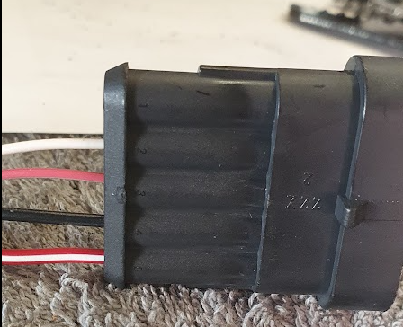

Ja, es gibt konkrete Angaben zur PWM-Steuerung der Tesla-Pumpe mit der Teilenummer 6007367-00-E:
-
PWM Signal:\ Die Pumpe erwartet ein PWM-Signal, das „gegen Masse geschaltet" (low-side) ist, also ein Signal, das zwischen offen (hochohmig) und GND wechselt, nicht ein klassisches 0/5V-Pegelsignal.\ Das PWM-Signal wird an Pin 3 der Pumpe angeschlossen13.
-
Signalpegel:\ Das PWM-Signal arbeitet mit 5V-Logikpegeln, wobei der Eingang intern mit einem Pull-up-Widerstand auf 5V liegt. Das bedeutet, der Eingang ist standardmäßig auf 5V und wird durch das PWM-Signal auf Masse gezogen.\ Ein 3,3V-Logiksignal reicht in der Praxis oft nicht aus, um den Eingang zuverlässig als „Low" zu erkennen, da der interne Pull-up auf 5V liegt. Ein Open-Drain-Ausgang oder ein Transistor/MOSFET, der direkt auf Masse schaltet, ist ideal13.
-
PWM-Frequenz:\ Die Pumpe erwartet eine sehr niedrige PWM-Frequenz von etwa 2 Hz (ungewöhnlich langsam für PWM)3.\ Viele Mikrocontroller erzeugen PWM im kHz-Bereich, das ist hier nicht kompatibel. Die Frequenz muss explizit auf ca. 2 Hz eingestellt werden.
-
Spannungsversorgung:\ Die Pumpe selbst läuft mit 12--13V Versorgungsspannung, akzeptiert 8--16V13.
-
Zusammenfassung für die Ansteuerung:
-
PWM-Eingang: Pin 3, gegen Masse schalten (Open-Drain/Collector oder MOSFET empfohlen)
- PWM-Frequenz: ca. 2 Hz
- PWM-Pegel: 5V, aber Signal muss aktiv auf Masse ziehen
- Versorgung: 12V
- Ohne gültiges PWM-Signal läuft die Pumpe nach 4--7 Sekunden auf Volllast
Quellen:
Praktische Umsetzung:\ Mit einem ESP32 kannst du das Signal erzeugen, aber du solltest einen kleinen NPN-Transistor oder MOSFET als Open-Drain-Treiber verwenden, um den PWM-Eingang der Pumpe sicher auf Masse zu schalten. Außerdem musst du die PWM-Frequenz auf 2 Hz einstellen, was mit Software-PWM auf dem ESP32 möglich ist.
Fazit:\ Die PWM-Spannung ist durch den internen Pull-up auf 5V definiert. Das Signal muss auf Masse gezogen werden (Open-Drain). Ein direktes 3,3V-Signal reicht nicht, aber mit einem Transistor als Schalter ist die Ansteuerung problemlos möglich, auch über 2 Meter Leitungslänge, solange du Störungen minimierst und die Leitungen sauber verlegst13.
Für die Ansteuerung des PWM-Eingangs der Tesla-Pumpe (6007367-00-E) empfehle ich einen kleinen NPN-Transistor oder einen Logikpegel-N-Kanal-MOSFET. Beide Varianten sind geeignet, um das Signal zuverlässig auf Masse zu ziehen (Open-Drain/Open-Collector).
Empfohlene Transistoren
Typ Beispiel Vorteile Hinweise
NPN-Transistor BC547, BC337 Einfach, günstig, überall verfügbar Basisvorwiderstand nötig N-Kanal MOSFET 2N7000, IRLML6344 Direkt mit 3,3V ansteuerbar, geringer Rds(on) Gatewiderstand empfohlen
Empfohlene Schaltungsvariante (NPN-Transistor, z. B. BC547):
- Kollektor an den PWM-Eingang der Pumpe (Pin 3)
- Emitter an Masse (GND)
- Basis über einen 1 kΩ Widerstand an den ESP32 GPIO
- Optional: 10 kΩ Pull-Down von Basis nach Masse für sauberes Abschalten
MOSFET-Variante (z. B. 2N7000):
- Drain an den PWM-Eingang der Pumpe
- Source an Masse (GND)
- Gate über 100 Ω an den ESP32 GPIO
- Optional: 10 kΩ Pull-Down von Gate nach Masse
Begründung:
- Beide Typen schalten zuverlässig auf Masse, auch wenn der PWM-Eingang intern auf 5V gezogen wird.
- Sie sind robust gegen Störungen und funktionieren auch bei längeren Leitungen.
Tipp:\ Wenn du einen MOSFET wählst, achte auf einen Logikpegel-Typ (z. B. IRLML6344, 2N7000), damit er mit 3,3V sauber durchschaltet.
Fazit:\ Für deine Anwendung sind BC547 (NPN) oder 2N7000 (Logik-MOSFET) bewährte, leicht verfügbare und zuverlässige Bauteile.
Die Beschaltung der Vehicle Control Unit
Anschlussbild Lilygo T 485
GND Unlock key, DRV8871 GND , ULN2803 Pin9(weiss), TYPE2 Feedback IO25 DRV8871 IN1 (schwarz) IO32 Unlock key (violett) IO33 DRV8871 IN2 (grau) IO05 Inverter Pump (grün) IO12 Battery Pump (blau) IO34 Reserve 1 (orange) IO35 Reserve 2 (gelb) IO18 TYPE2 Feedback (braun) VDD DRV8871 VDD (rot)
ULN2803
Our MX-5e is a typical application of this pump speed controller. When the ignition is switched on, 12V dc is provided to pump and a 5V dc-dc converter, the latter powering the pump speed controller. Both are powered via a suitable fuse. With no inputs connected, the pump will run at 25% which is 750rpm.
The Driver Control Unit (DCU) is interfaced to the pump speed controller via the three pins: SP1, SP2 and ERR. Based on observed temperatures in the MX-5e cooling system, the DCU will control the speed via the SP1 & SP2 pins: [00] = 20% PWM and 750rpm, [01] = 40% PWM and 2000rpm, [10] = 60% PWM and 3300rpm, [11] = 80% PWM giving the maximum speed of 4700rpm.
If the sensed speed of the Tesla pump (via SEN pin) is out of the expected range, then the ERR pin is pulled low by the control and the Driver Control Unit (DCU) will then flag the error to the driver.
Onboard-Ladegerät

DC-DC Wandler
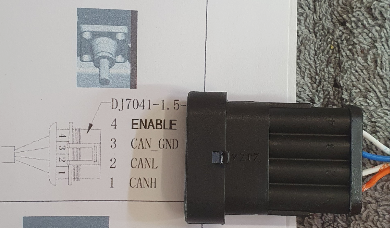
R-N-D Schalter

Kombi-Instrument
Das Kombi-Instrument verfügt über digitale Anzeigen und nutzt weiterhin die analogen Instrumente um digitale Informationen darzustellen.
MicroController
Hersteller: LONGAN, Typ: CanBed RP2040
Aufgabe: Der Microcontroller erweitert das Kombi-Instrument um digitale Anzeigen und reaktiviert die analogen Instrumente. Er stellt Daten vom Inverter und zusätzliche CanBus Informationen dar.
Specifications:
- Microcontroller: Raspberry Pi RP2040
- Clock speed: 133 MHz
- Flash memory: 2MB
- RAM: 264KB
- Operating voltage: 9-28V
Display 1 -- Zentrale Meldungsanzeige
Typ: 0.91 Zoll OLED Display SSD1306 I2C/IIC 128x32 Modul 4 PIN Weiß
Aufgabe: Berichtet über Systemmeldungen beim Start und weitere Zustände. Die Standardanzeige ist „BERTONE".
Display 2 -- Ganganzeige und Fehlerzustände
Typ: 0.49 Zoll OLED Display Module IIC I2C/SSD1306 Weiß
Aufgabe:\ Wertet die korrespondierenden System Statusmeldungen des Inverters aus.
Anzeigewerte:\ R Reverse Rückwärtsfahrt
N Neutral Neutral
D Drive Vorwärtsfahrt
P Park Handbremse
RND-Display Fehlercodes:
NDT: Kein Datenempfang
CRSH: Systemabsturz
Anzeige Bedeutung Beschreibung NODT Kein Datenempfang (Timeout) Keine Telemetriedaten vom ESP32 empfangen (länger als 2 Sekunden).
CRSH Systemabsturz Dispay Unit System durch Watchdog zurückgesetzt nach einem Softwarefehler.
Display 3 - Odometer
Bereifung: 185/60 R13\ Reifendurchmesser: 55,2 cm\ Abrollumfang: 167,9 cm -- 173,5 cm
Beispiel: 180 km/h = 50 m/s,** Umdrehungen pro Sekunde = geschwindigkeit/umfang\ 50 m/s : 1,71 m = 29,24 umdrehungen/sek
10 km/h = 2,77 m/s,** Umdrehungen pro Sekunde = geschwindigkeit/umfang\ 2,77777 m/s : 1,71 m = 1,624 umdrehungen/sek
Auszug aus dem Code zur Ermittelung der Geschwindigkeit: from machine import Pin, PWM import time
WHEEL_CIRCUMFERENCE = 1.71 \# Radumfang in Metern
PULSES_PER_REVOLUTION = 2 \# Anzahl der Pulse pro Radumdrehung
INPUT_PIN = 16 \# GPIO-Pin für den Eingangspuls
\# PWM für Pulszählung einrichten
pwm = PWM(Pin(INPUT_PIN))
pwm.freq(100000) \# Hohe Frequenz für genaue Messung
def calculate_speed():
start_time = time.ticks_us()
start_count = pwm.duty_u16()
time.sleep(0.1) \# Messintervall (anpassbar für verschiedene Geschwindigkeiten)
end_time = time.ticks_us()
end_count = pwm.duty_u16()
duration = time.ticks_diff(end_time, start_time) / 1000000 \# inSekunden
pulse_count = end_count - start_count
if pulse_count \> 0:
revolutions = pulse_count / PULSES_PER_REVOLUTION
distance = revolutions \* WHEEL_CIRCUMFERENCE
speed_mps = distance / duration
speed_kmh = speed_mps \* 3.6
return speed_kmh
else:
return 0
while rue:
speed = calculate_speed()
print(f\"Aktuelle Geschwindigkeit: {speed:.2f} km/h\")
time.sleep(0.5) \# Aktualisierungsintervall Dieser Code nutzt die PWM-Funktionalität des RP2040, um die Pulse präzise zu zählen\[1\]\[3\]. Hier sind die Hauptpunkte:
1\. Wir verwenden PWM im Eingangsmodus, um die Pulse zu zählen.
2\. Die Funktion \`calculate_speed()\` misst die Anzahl der Pulse in einem kurzen Zeitintervall.
3\. Die Geschwindigkeit wird aus der Anzahl der Umdrehungen, dem Radumfang und der verstrichenen Zeit berechnet.
4\. Das Messintervall von 0,1 Sekunden ermöglicht die Erfassung von Geschwindigkeiten von etwa 5 km/h bis über 200 km/h.
Für genauere Messungen bei sehr niedrigen oder sehr hohen Geschwindigkeiten können Sie das Messintervall dynamisch anpassen. Bei niedrigen Geschwindigkeiten verlängern Sie das Intervall, bei hohen Geschwindigkeiten verkürzen Sie es.
Beachten Sie, dass die tatsächliche Genauigkeit von der Stabilität und Frequenz der Eingangspulse abhängt. Für sehr präzise Messungen, insbesondere bei hohen Geschwindigkeiten, sollten Sie möglicherweise zusätzliche Filtertechniken oder eine Mittelwertbildung über mehrere Messungen in Betracht ziehen.
Citations:
\[1\] https://hackaday.com/2023/08/26/accurate-cycle-counting-on-rp2040-micropython/
\[2\] https://docs.micropython.org/en/latest/rp2/quickref.html
\[3\] https://iosoft.blog/2023/08/21/picofreq_python/
\[4\] https://www.youtube.com/watch?v=y2EDhzDiPTE
\[5\] https://forum.micropython.org/viewtopic.php?t=9692
\[6\] https://forums.raspberrypi.com/viewtopic.php?t=310796
\[7\] https://forum.micropython.org/viewtopic.php?t=9695
\[8\] https://media.ccc.de/v/sps22-4239-micropython-on-the-rp2040 **\**
Impulsgeber
Der Impulszähler liefert 2 Impulse pro Radumdrehung und ist direkt am Getriebe installiert.
Hersteller: RIDEX, Typ: 833C0073
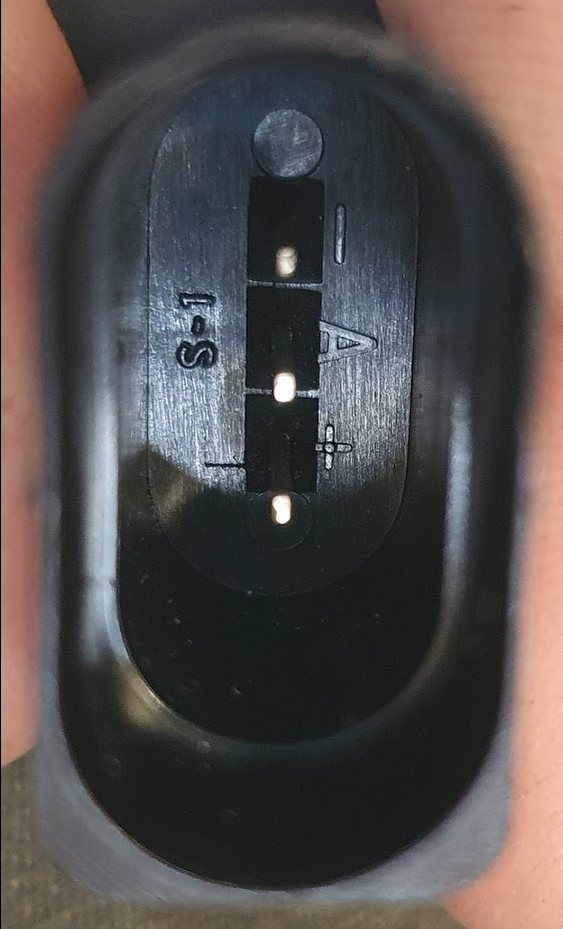
 Abb. Stecker und Belegung Impulsgeber
Abb. Stecker und Belegung Impulsgeber
BMS

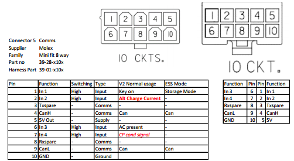
BMS Charge Control
Sicherheitsmaßnahmen
- Wegfahrschutz bei eingesteckten und verriegelten Stecker zur Verhinderung eines versehentlichen Wegfahrens
- Steckerverriegelung als Schutz vor Trennung der Verbindung unter Last und auch zur Verhinderung eines nicht-autorisiertes abstecken des Ladekabels.
- Nur bei vollständig eingestecktem Stecker wird eine Ladespannung angelegt.
- Die Abfrage des Proximity-Kontakts PP meldet den maximal möglichen Ladestrom des Fahrzeugs (bzw. des Kabels) an die Ladestation. Hierzu wird im Kabel ein Widerstand zwischen PP und PE gesetzt. Die Kodierung des zulässigen Stroms zum Widerstandswert ist in IEC 61851-1 geregelt: (https://de.wikipedia.org/wiki/IEC_62196_Typ_2#cite_note-9)

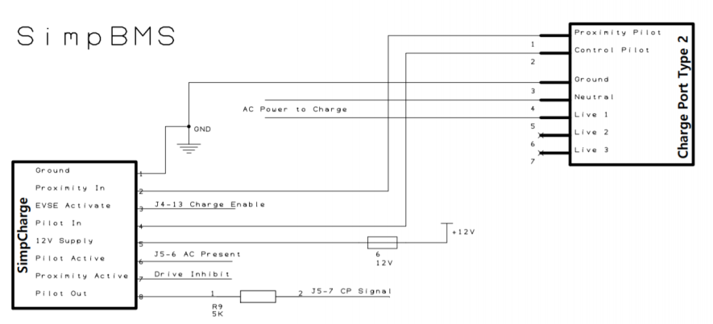
CanBus Meldung zum Ladeanschluss:\ msg.id = 0x246; //BMS Message to MCU msg.len = 8; msg.buf[0] = lowByte(SOC); msg.buf[1] = highByte(SOC); msg.buf[2] = lowByte(long(currentact / 100)); msg.buf[3] = highByte(long(currentact / 100)); msg.buf[4] = bmsstatus; msg.buf[5] = (digitalRead(IN1) | (digitalRead(IN2) \<\< 1) | (digitalRead(IN3) \<\< 2) | (digitalRead(IN4) \<\< 3)); // IN1=KeyOn , IN2=Alt_Charge_Cur_Signal ,IN3=Type2_PP, IN4=Type2_CP msg.buf[6] = 0x00; msg.buf[7] = 0x00;
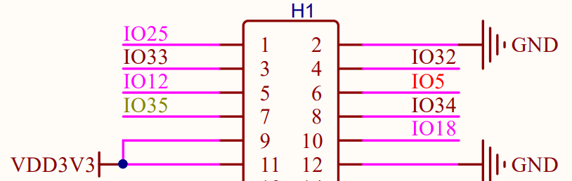
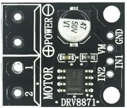
Type 2 Stecker Verriegelung:\ IO25 verriegelt den Stecker, IO33 entriegelt ihn, jeweils durch Ansteuerung des Motortreibers DRV8871.\ Eine manuelle Entriegelung kann im Fehlerfall bei Erfüllung der Voraussetzungen (kein Stromfluss aus dem Onboard-Ladegerät) durch Drücken des Tasters verbunden mit IO32 erfolgen.\ Eine mechanische Entriegelung kann durch Ziehen der Not-Entriegelung unterhalb der Typ2 Buchse erfolgen. Dazu muss vorher die Motorhaube geöffnet werden.\Ladeanschluss LED
- Grün:
- Ladevorgang läuft.
- Blau:
- Verbindung zum Ladegerät wird hergestellt.
- Gelb:
- Fehler beim Laden.
- Rot:
- Fehler Batteriemangementsystem.
- Blitzend: Fehler Isolationswiderstand
8 Isolationsüberwachungsgerät (IMD)
Zur kontinuierlichen Überwachung des Isolationswiderstandes zwischen dem aktiven Hochvoltsystem (\(HV+/HV-\)) und der Fahrzeugmasse (Kl. 31) wird ein automobiles Isolationsüberwachungsgerät (IMD) eingesetzt.
8.1 Technische Spezifikation des Sensors
| Parameter | Spezifikation / Wert |
|---|---|
| Typ / Hersteller | iso165C-1 / Bender GmbH & Co. KG |
| Spannungsbereich | 0 V bis 600 V DC |
| Versorgungsspannung (\(U_{\mathrm{s}}\)) | 12 V DC (Niedervoltbordnetz) |
| Innenwiderstand (\(R_{\mathrm{i}}\)) | 1200 kΩ |
| Signalschnittstelle | CAN-Bus (500 kBaud) |
| Ansprechwerte | Vorwarnung: 400 kΩ / Hauptalarm (Fehler): 250 kΩ |
| Messverfahren / Ansprechzeit | DCP (Direct Current Pulse) / < 20 Sekunden |
8.2 IMD Quellcode-Dokumentation (Bender iso165C-1)
Dieses Kapitel dokumentiert die vollständige softwareseitige Implementierung der Isolationsüberwachung in der Vehicle Control Unit (VCU / ESP32).
8.2.1 Flankengesteuerter Konformitäts-Trigger (Edge Trigger)
Sobald das Batteriemanagementsystem (BMS) signalisiert, dass das Fahrzeug in einen betriebsbereiten Zustand wechselt, prüft die VCU die hardwareseitigen Status-Bits des Isometers (Bits 12 und 13 im VIFC-Status). Ist der Selbsttest dort noch als „ausstehend“ markiert, wird er vor der HV-Freigabe automatisch angefordert.
// 4. Automated Edge Trigger for the Bender IMD Isolation Self-Test
static uint8_t lastBmsStatus = BMS_STATUS_BOOT;
uint8_t currentBmsStatus = BMS_STATUS_BOOT;
bool bmsValid = false;
WITH_DATA_MUTEX({
currentBmsStatus = telemetryData.bmsStatus;
bmsValid = telemetryData.bmsStatusValid;
});
if (bmsValid) {
// Prüfung auf betriebsrelevante Zustände (Bereit, Fahren oder Laden)
bool isOperational = (currentBmsStatus == BMS_STATUS_READY ||
currentBmsStatus == BMS_STATUS_DRIVE ||
currentBmsStatus == BMS_STATUS_CHARGE);
// Abfrage Bender VIFC-Status: Bit 12 oder 13 gesetzt = Selbsttest fehlt/erforderlich
bool imdSelfTestMissing = (telemetryData.vifcStatus & (1 << 12)) || (telemetryData.vifcStatus & (1 << 13));
// Automatische Anforderung, falls operational, Test fehlt und noch kein Test läuft
if (isOperational && imdSelfTestMissing && !telemetryData.selfTestRunning) {
WITH_DATA_MUTEX({ telemetryData.selfTestRequested = true; });
safe_printf("[SYSTEM] Compliance Trigger: IMD flags test missing (Bits 12/13). Initiating self-test.\n");
}
lastBmsStatus = currentBmsStatus;
}
lastSafetyCheck = now;
8.2.2 Asynchrone Zustandsmaschine zur Testabwicklung (self_test_task)
Der nachfolgende Code-Auszug zeigt die vollständige Zustandsmaschine zur zyklischen Auswertung der Diagnoseregister, Steuerung der internen Koppelrelais und Absicherung der Hochvoltschütze im Fehlerfall:
void self_test_task(void *parameter) {
esp_task_wdt_add(NULL);
enum SelfTestState {
IDLE,
TRIGGERING_TEST,
RUNNING_TEST,
EVALUATING,
CONNECTING_MEASUREMENT,
CLEANUP_SUCCESS,
CLEANUP_FAULT
} state = IDLE;
unsigned long stateTimer = 0;
while (1) {
esp_task_wdt_reset();
unsigned long now = millis();
bool requested = false;
bool charging = false;
uint16_t imdStatus = 0;
uint16_t vifcStatus = 0;
uint8_t result = 0;
bool resultValid = false;
// Thread-safe isolation snapshot
if (xSemaphoreTake(dataMutex, pdMS_TO_TICKS(20)) == pdTRUE) {
requested = telemetryData.selfTestRequested;
charging = telemetryData.isCharging;
imdStatus = telemetryData.imdStatus; // D_IMC_STATUS
vifcStatus = telemetryData.vifcStatus; // D_VIFC_STATUS
result = telemetryData.selfTestResult;
resultValid = telemetryData.selfTestResultValid;
xSemaphoreGive(dataMutex);
}
switch (state) {
case IDLE:
if (requested && !charging) {
state = TRIGGERING_TEST;
stateTimer = now;
WITH_DATA_MUTEX({
telemetryData.selfTestRequested = false;
telemetryData.selfTestRunning = true;
telemetryData.selfTestFailed = false;
telemetryData.selfTestResultValid = false;
});
// Hardware-Selbsttest anstoßen (Erfordert geöffnete interne Relais)
send_imd_self_test_start(false);
safe_printf("[IMD] Triggering internal short self-test sequence...\n");
}
break;
case TRIGGERING_TEST:
// Verify via D_IMC_STATUS Bit 4 that the device confirms the test run
if (imdStatus & (1 << 4)) {
safe_printf("[IMD] Hardware confirms internal test is actively executing.\n");
state = RUNNING_TEST;
stateTimer = now;
} else if (now - stateTimer > 2000) {
safe_printf("[IMD] WARNING: Trigger missed. Retrying test command...\n");
send_imd_self_test_start(false);
stateTimer = now;
}
break;
case RUNNING_TEST: {
// Verify test completion via D_VIFC_STATUS Bit 12 (0 = Executed/Done)
bool testFinished = !(vifcStatus & (1 << 12));
if (resultValid || testFinished) {
state = EVALUATING;
} else if (now - stateTimer > 5000) {
safe_printf("[IMD] ERROR: Internal self-test timed out.\n");
state = CLEANUP_FAULT;
}
break;
}
case EVALUATING: {
// Evaluation der internen Bender-Diagnoseregister
bool internalIsoError = (imdStatus & (1 << 0));
bool internalChassisError = (imdStatus & (1 << 1));
bool internalSystemError = (imdStatus & (1 << 2));
if (result == 0 && !internalIsoError && !internalChassisError && !internalSystemError) {
safe_printf("[IMD] Internal electronics check PASSED. Connecting coupling relays.\n");
state = CONNECTING_MEASUREMENT;
stateTimer = now;
// CRITICAL STEP: Interne Bender-Relais schließen, um HV-Bus zu verbinden
set_imd_internal_coupling(true);
} else {
safe_printf("[IMD] CRITICAL: Internal electronics check FAILED! Status: 0x%X\n", imdStatus);
state = CLEANUP_FAULT;
}
break;
}
case CONNECTING_MEASUREMENT:
if (now - stateTimer >= 200) {
state = CLEANUP_SUCCESS;
}
break;
case CLEANUP_SUCCESS:
// Freigabesignal an das externe BMS übermitteln
send_bms_relay_release(true);
WITH_DATA_MUTEX({ telemetryData.selfTestRunning = false; });
state = IDLE;
break;
case CLEANUP_FAULT:
// Im Fehlerfall bleibt die Freigabe permanent gesperrt
set_imd_internal_coupling(false);
send_bms_relay_release(false);
WITH_DATA_MUTEX({
telemetryData.selfTestRunning = false;
telemetryData.selfTestFailed = true;
});
state = IDLE;
break;
}
vTaskDelay(pdMS_TO_TICKS(100));
}
}
8.3 Nachweis der Normkonformität
Die oben dokumentierte softwareseitige Verriegelung und Flankenerkennung erfüllt die zentralen Schutzziele der fahrzeugrelevanten Sicherheitsstandards direkt im Systemhochlauf:
!!! success Erfüllung der IEC 61557-8 (Isolationsüberwachung in IT-Systemen) Die Funktionalität des IMD (inklusive der internen Messketten und Ankoppelrelais) wird ereignisbasiert bei jedem relevanten Zustandswechsel überprüft. Durch die Abfrage von imdSelfTestMissing (Bits 12 und 13) erkennt der Algorithmus sofort, ob das Isometer einen geräteinternen Hardware-Selbsttest fordert, setzt proaktiv selfTestRequested = true und arbeitet die Validierungssequenz ab.
!!! success Erfüllung der ISO 6469-3 (Sicherstellung der elektrischen Sicherheit) Zum Schutz von Personen vor elektrischem Schlag im Fahrbetrieb stellt die Bedingung isOperational sicher, dass sowohl im Status BMS_STATUS_READY (Fahrbereitschaft vorbereitet) als auch in BMS_STATUS_DRIVE (Fahrbetrieb aktiv) der Isolationsstatus zweifelsfrei verifiziert sein muss. Solange die Bits 12/13 aktiv sind und die State Machine läuft, bleibt die Schaltschwelle für die echten HV-Hauptschütze physisch gesperrt (Drive Inhibit über den Inverter-Proxy).
!!! success Erfüllung der IEC 61851-1 (Konduktive Ladesysteme) Bevor Energie aus einer externen Ladesäule (EVSE) in das Fahrzeug fließen darf, greift der Trigger beim Übergang in den Zustand BMS_STATUS_CHARGE. Der Ladevorgang wird auf CAN-Ebene so lange blockiert, bis das Isometer den durch den Edge-Trigger initiierten Selbsttest erfolgreich abgeschlossen, seine internen Messrelais geschlossen und einen Isolationswert weit oberhalb der kritischen Schwellen gemeldet hat.
9 Iso-R Prüfbox
Der Tester für das Insulation Monitoring Device (Isolationswächter) ist aus 8 in Reihe geschalteten 82 kΩ-Präzisionswiderständen aufgebaut. Vier separate Ausgänge ermöglichen es, den simulierten Isolationswiderstand gezielt auf 496, 372, 248 und 124 kΩ zu senken.
9.1 Geräteaufbau

9.2 Spezifikation der Ausgänge
| Ausgang | Widerstände in Reihe | Gesamtwiderstand | Prüfzweck |
|---|---|---|---|
| D | R1 + R2 + R3 + R4 + R5 + R6 + R7 + R8 | 496 kΩ | Prüfung Hysterese (Ansprechgrenze liegt bei ca. 500 kΩ) |
| C | R1 + R2 + R3 + R4 + R5 + R6 | 372 kΩ | Auslösung WARNUNG (Schwelle: 400 kΩ) |
| B | R1 + R2 + R3 + R4 | 248 kΩ | Auslösung FEHLER / Abschaltung (Schwelle: 250 kΩ) |
| A | R1 + R2 | 124 kΩ | Minimaler Fehlerwert (harter Defekt, klare Abschaltung) |
| GND | Keine Widerstände | 0 Ω | Fahrzeugmasse (Referenzpotenzial) |
9.3 Testvorbereitung
- Masseverbindung: Anschluss GND (schwarz) über eine Krokodilklemme fest mit der Fahrzeugmasse (Karosserie) verbinden.
- HV-Verbindung: Sicherheitsprüfkabel mit dem zu prüfenden Pfad (HV+ oder HV-) verbinden.
- Messreihenfolge: Das andere Ende des Sicherheitsprüfkabels beginnend beim höchsten Widerstands-Ausgang (496 kΩ, grün) sukzessive nach unten durchstecken.
9.4 Durchführung der Prüfung und erwartete Systemreaktion
Die mathematische Bestimmung des jeweiligen Prüfwiderstandes berechnet sich im freistehenden Block wie folgt:
| Nr. | Ausgang | Kabelfarbe | Prüfwiderstand | Erwarteter Zustand | Prüfzweck / Beschreibung |
|---|---|---|---|---|---|
| 1 | D | Grün | 496 kΩ | OK | Startwert im sicheren Bereich (keine Systemreaktion). |
| 2 | C | Gelb | 372 kΩ | WARNUNG | Löst die 400 kΩ-Warnschwelle im VCU-Display aus. |
| 3 | B | Rot | 248 kΩ | FEHLER | Unterschreitet die 250 kΩ-Abschaltschwelle. AIRs müssen trennen. |
| 4 | A | Rot | 124 kΩ | FEHLER | Kritischer Isolationsfehler bleibt aktiv bestehen. |
CAN Open Network
Baudrate: 500k
CO Node: CAN Open Node. In this case you create a network composed by some nodes. There are two type of CO Nodes:
- Node One: You must specify Node One, the Net Manager. You must complete the Net Composition with the Node One ID and listing all active Generic Nodes in the network with their ID. This node can cause the falling down of the network in case of fault.
- Generic Node: one of the secondary nodes in your network.
Inverter CanBus Meldungen
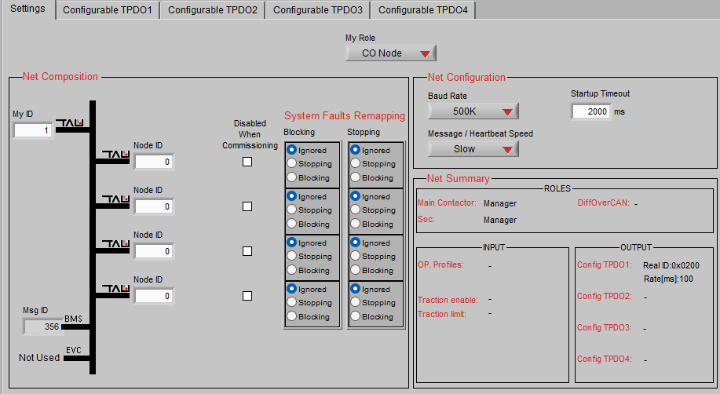
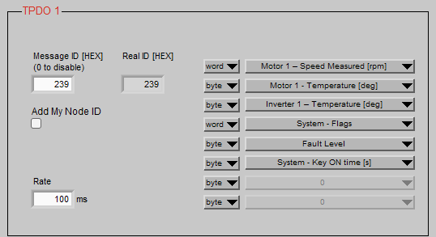
\ NEU! TODO\ TPDO 1 (0x239) -- Intervall: Fast (100ms / 10Hz)
Hier landen alle Variablen, die du für flüssige Dashboard-Anzeigen (Drehzahlmesser, Powermeter) und sofortige Leistungsberechnungen brauchst.
- Byte 0--1 (Word): Motor Speed (rpm)
- Byte 2--3 (Word): Motor 1 - Torque Word % (signed:
-100%bis+100%-- zeigt dir auch Rekuperation perfekt als Minuswert an!) - Byte 4 (Byte): Motor Temperature (°C)
- Byte 5 (Byte): Inverter Temperature (°C)
- Byte 6 (Byte): Fault Level
- Frei: Byte 7 (z.B. für ein Status-Byte)
TPDO 2 (0x240) -- Intervall: Medium (250ms / 4Hz)
Hier landen die mächtigen Bitmasken und Betriebsstundenzähler. Sie ändern sich nicht im Millisekundentakt, sind aber für die Diagnose unersetzlich.
- Byte 0--1 (Word): System Flags
- Byte 2--3 (Word): Motor Flags
- Byte 4-5 (WORD): System Key Ontime (Betriebsstunden seit Zündung ein)
MCU Konfiguration zum Auslesen der BMS Daten über Proxy BMS.

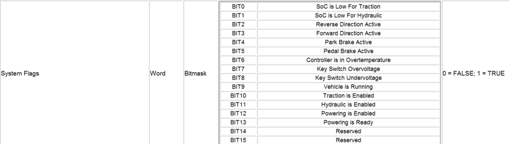
*Todo: Stop Flag bit0 bei IMD fault ergänzt!\ *Code-Implementierung des Software-Überlastschutzes (VCU)
Die VCU (ESP32 / Lilygo T485) liest kontinuierlich die Motordrehzahl (telemetryData.motorRPM) über die CAN-Bus-TPDOs (Real ID 239) des Inverters aus. In der zyklischen Funktion zur Übertragung der BMS-Proxy-Daten (send_proxy_bms_data(), CAN-ID 0x246) wird der Skalierungsfaktor für das Drehmoment (limit_percent) in Echtzeit berechnet und an den Inverter gesendet.
Quellcode-Auszug (C++):
void send_proxy_bms_data() {
uint16_t soc_hyper9 = 0;
int16_t current_da = 0;
uint8_t status = 0;
uint8_t limit_percent = 100;
if (xSemaphoreTake(dataMutex, pdMS_TO_TICKS(20)) == pdTRUE) {
soc_hyper9 = (uint16_t)((telemetryData.bmsSoC / 100.0f) \* 32768.0f);
current_da = (int16_t)(telemetryData.bmsCurrent \* 10.0f);
// \-\-- DYNAMIC CURRENT LIMITING (200A PROTECT) \-\--
if (telemetryData.motorRPM \> 1272) {
uint32_t calculated_limit = 127240 / telemetryData.motorRPM;
limit_percent = (uint8_t)calculated_limit;
if (limit_percent \> 100) limit_percent = 100;
if (limit_percent \< 10) limit_percent = 10; // Lowest value, to ensure
propulsion
} else {limit_percent = 100; // Maximum Torque at Start with less than
1272 U/min}
// BMS-Warning have always highest priority
if (telemetryData.bmsHighTempWarn && limit_percent \> 50) {limit_percent = 50;
} else if (telemetryData.bmsLowVoltageWarn && limit_percent \> 40) {limit_percent = 40;}
*// \-\-- DRIVE INHIBIT (INTERLOCK) LOGIC \-\--*
bool cableConnected = (telemetryData.bmsStatus == 0x04 \|\| telemetryData.isCharging);
bool systemFault = (telemetryData.selfTestResult != 0 \|\| telemetryData.bmsHardwareFault);
if (cableConnected \|\| telemetryData.isLocked \|\| systemFault) {status \|= (1 \<\< 5); // DRIVE INHIBIT ACTIVATED
} else if (limit_percent \< 100) {status \|= (1 \<\< 1); // LIMIT MODE
} else {status \|= (1 \<\< 2); // NORMAL MODE}
if (telemetryData.isCharging) status \|= (1 \<\< 3);
xSemaphoreGive(dataMutex);
}
twai_message_t msg = {0};
msg.identifier = HYPER9_PROXY_ID;
msg.data_length_code = 8;
msg.data\[0\] = (uint8_t)(soc_hyper9 \>\> 8);
msg.data\[1\] = (uint8_t)(soc_hyper9 & 0xFF);
msg.data\[2\] = (uint8_t)(current_da \>\> 8);
msg.data\[3\] = (uint8_t)(current_da & 0xFF);
msg.data\[4\] = status;
msg.data\[5\] = limit_percent; // dynamic calculated limit send to Inverter
twai_transmit(&msg, pdMS_TO_TICKS(5));
}
DC/DC Wandler
Haben Sie bereits versucht, die ID 0x18FF51E5 zu senden, und erhalten Sie eine Antwort auf 0x18FF50E5** zurück?
CanBus CrossCom
Inverter Digital-Ausgänge
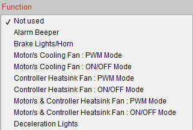
K1-30 -- Zusatzlüfter Inverter-Kühlkreis ON/OFF
Einschalttemperatur: 78°C, Ausschalttemperatur: 68°C
K1-31 -- tbd
Inverter Digital-Eingänge
K1 - 4 Interlock K1 - 5 Vorwärtsfahrt Akteur: RND Schalter Ort: Mittelkonsole
K1 - 6 Rückwärtsfahrt Akteur: RND Schalter Ort: Mittelkonsole
K1- 7 Rekuperation 0% Akteur: Recu Schalter Ort: Mittelkonsole
K1-18 Pedal Bremse Akteur: Bremslicht über Relais **Ort: Pedale (Relaiseinheit)
K1-19 tbd